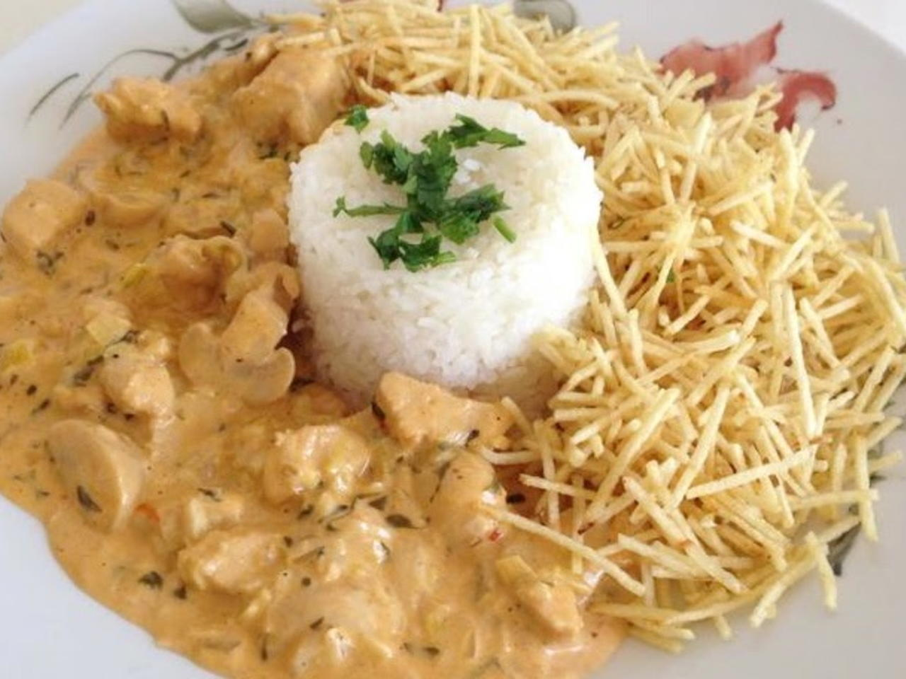
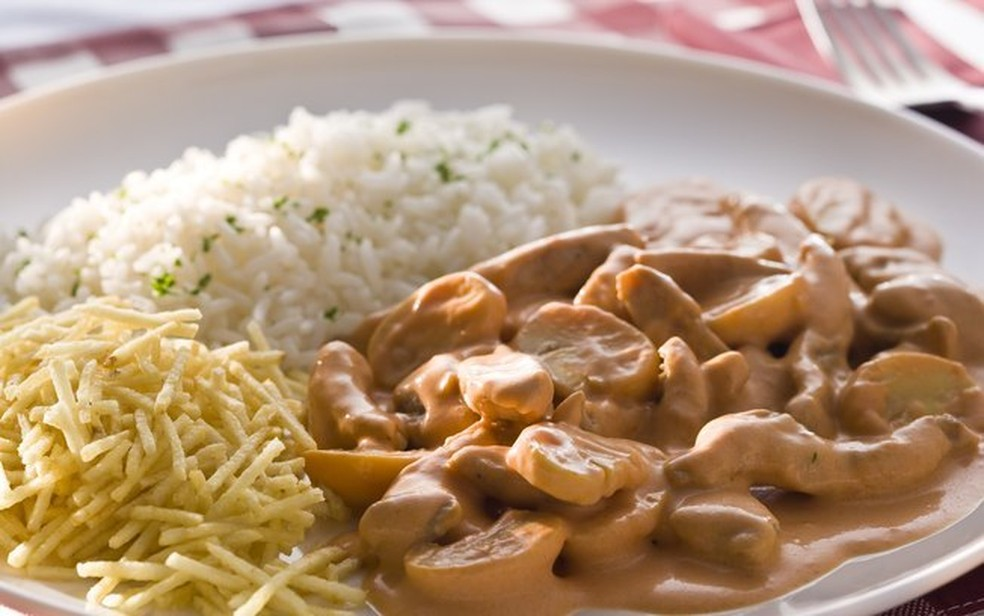

RECEITA ESTROGONOFF

INGREDIENTES
- 1 kg de peito frango
- 1 cebola media
- 3 dentes de alho
- 3 colheres de (sopa) de azeite
- pimenta a gosto
- sal a gosto
- colarau a gosto
- 4 colheres de (sopa) mostarda
- 2 colehres de ketchup
- 1/2 sache de molho de tomate
- 1 lata de creme de leite
MODO DE PREPARO
- Corte o frango em cubinhos
- Em uma panela, coloque o azeite, o alho e a cebola.
- Leve ao fogo até dourar.
- Em seguida, adicione o sal, a pimenta, o colorau, a mostarda e o ketchup. Adicione agora o molho de tomate e deixe ferver por aproximadamente 5 minutos.
- Desligue o fogo e adicione o creme de leite.
- Para acompanhar esse prato é arroz e batata palha.
